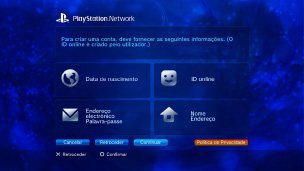

PlayStation™Network > Como se inscrever
Como se inscrever
Para utilizar este recurso, pode ser necessário atualizar o software de sistema.
PSNSM é o serviço online para compras online, acessando à  (PlayStation®Store), para entrar em bate-papo em
(PlayStation®Store), para entrar em bate-papo em  (Amigos) ou para usar vários serviços online da PSNSM. Para utilizar a PSNSM, você deve possuir uma conta Sony Entertainment Network. Para criar uma conta, selecione
(Amigos) ou para usar vários serviços online da PSNSM. Para utilizar a PSNSM, você deve possuir uma conta Sony Entertainment Network. Para criar uma conta, selecione  (Inscreva-se) em
(Inscreva-se) em  (PlayStation™Network), e, em seguida, siga as instruções na tela.
(PlayStation™Network), e, em seguida, siga as instruções na tela.

Principais itens necessários para criar uma conta
| Informações pessoais | Insira informações sobre o usuário registrado, inclusive dia, mês e ano de nascimento, nome e endereço do usuário. |
|---|---|
| Conta principal / subconta | Há dois tipos de contas: contas principais e subcontas. Os titulares das contas principais podem definir certas condições de uso nas subcontas associadas. Conta principal: A conta padrão pode ser criada por um usuário registrado de uma idade específica ou mais velho. Os titulares das contas principais podem definir certas condições de uso nas subcontas associadas. Subconta: Os usuários que não atenderem aos requisitos de qualificação para uma conta principal em sua região poderão usar apenas uma subconta. Os titulares de uma subconta não podem criar carteiras, mas podem utilizar a carteira da conta principal associada para pagar por produtos e serviços. Uma subconta não poderá ser criada se uma conta principal associada não existir. Os requisitos de qualificação das contas principais e das subcontas variam dependendo do país ou da região de residência. Para obter detalhes, visite o site da SIE de sua região. |
| ID de início de sessão (endereço de email) | Registre uma ID para usar ao iniciar a sessão na PSNSM. Utilize um endereço de e-mail válido que possa ser utilizado para receber mensagens de confirmação em casos como, por exemplo, ao fazer uma compra na (PlayStation®Store). |
| Senha |
Crie uma senha de acordo com o seguinte:
|
| ID online |
Registre um nome que será exibido publicamente na PSNSM. Você não poderá alterar sua ID on-line depois de criá-lo. Crie sua ID on-line de acordo com o seguinte:
|
Dicas
- Para criar uma subconta, acesse o site a seguir:
https://www.playstation.com/acct/family - Dependendo da idade do menor, um PC será necessário para criar a subconta. Durante o processo de criação da conta, um e-mail é enviado para o endereço de e-mail associado ao ID de início de sessão do titular da conta principal. Siga as instruções no e-mail para completar o registro em um PC.
- Para iniciar uma sessão na PSNSM usando a subconta criada, você deverá associar a conta a um Usuário que fará login no sistema PS3™. Consulte [Utilizando uma conta existente] em (PlayStation™Network) neste guia.
- Seu ID de início de sessão (endereço de e-mail) e senha não serão exibidos publicamente. Cuidado para não compartilhar essas informações com outras pessoas.
- Você pode criar apenas uma conta por Usuário no sistema PS3™. Para criar contas adicionais, vá para
 (Usuários) e crie Usuários adicionais.
(Usuários) e crie Usuários adicionais. - Para obter detalhes sobre como lidar com as informações pessoais relacionadas aos usuários, visite o site da SIE de sua região.
- O acesso à PSNSM requer o serviço de Internet de banda larga. A conexão discada não é suportada.
- A PSNSM está disponível apenas em certas regiões e idiomas. Para obter detalhes, contate o atendimento de suporte técnico de sua região.
- (Inscreva-se) é exibido apenas se uma conta não tiver sido criada.